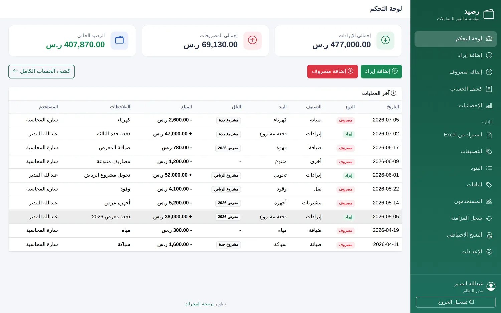
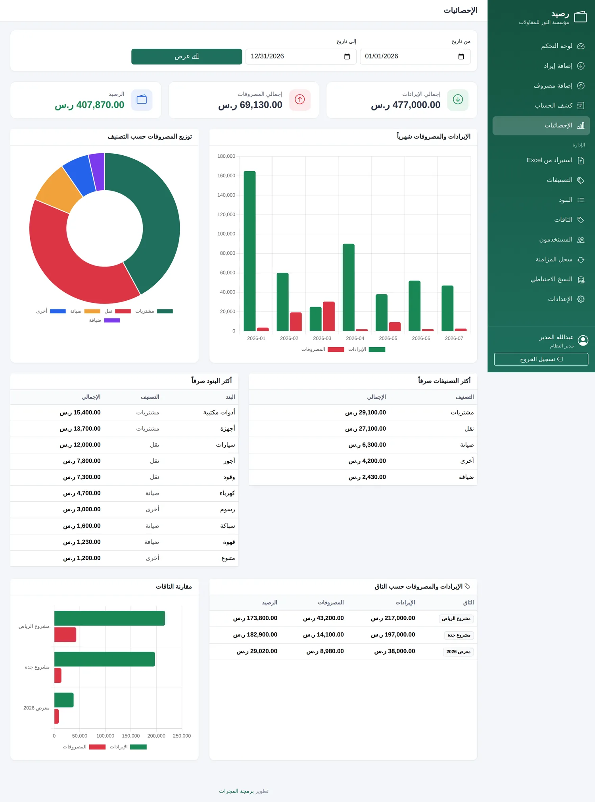
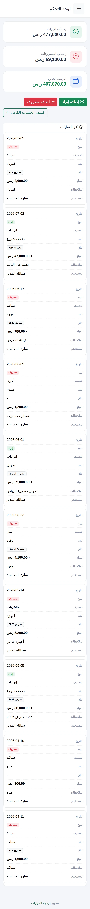
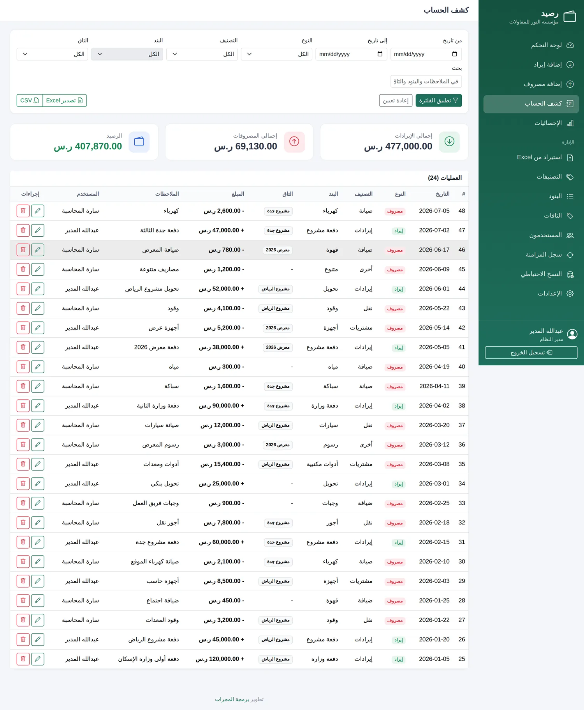
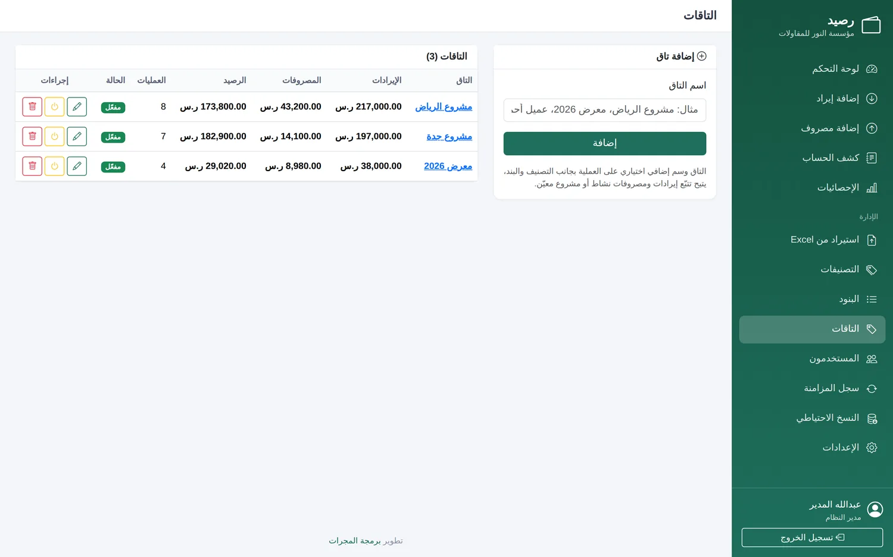
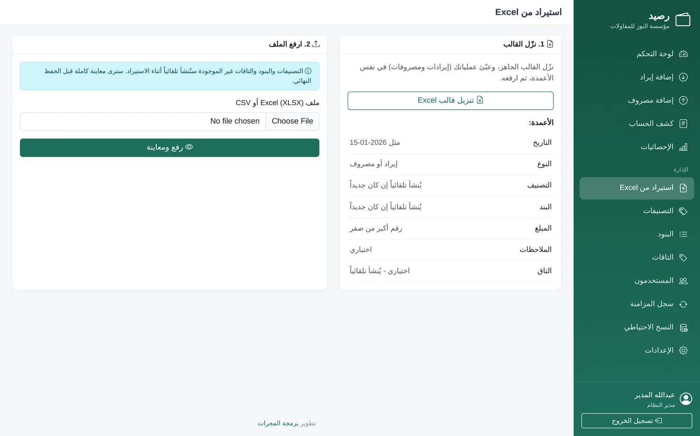
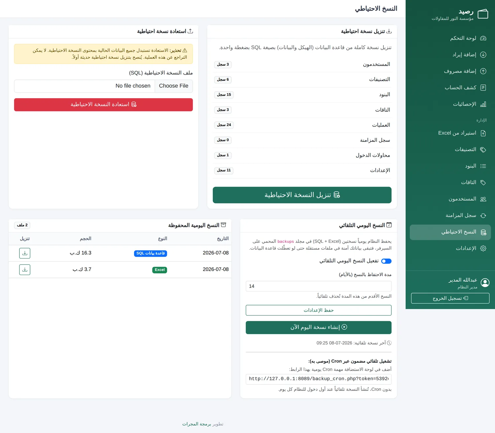
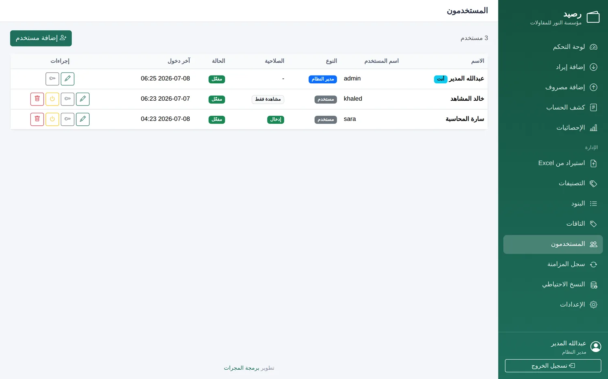

«رصيد» نظام مالي عربي خفيف وسريع لإدارة الإيرادات والمصروفات، يمنحك صورة واضحة عن وضعك المالي في أي لحظة — بتقارير وإحصائيات، ونسخ احتياطي تلقائي، وواجهة احترافية تعمل على الكمبيوتر والجوال.

بديل عن الدفاتر الورقية وملفات Excel المبعثرة، بنظام مركزي منظّم يعرف وضعك المالي في أي وقت.
اعرف إجمالي الإيرادات والمصروفات والرصيد الحالي فوراً دون حسابات يدوية.
عبر «التاقات» تعرف كم صرفت وكم دخلت من كل مشروع أو جهة على حِدة.
نسخ احتياطي يومي تلقائي يحفظ بياناتك في ملفات مستقلة، فلا تفقدها أبداً.
إحصائيات ورسوم بيانية جاهزة تُظهر أداءك المالي دون أي جهد أو برامج إضافية.
من يُدخل البيانات لا يستطيع التعديل أو الحذف — تحكّم كامل في صلاحيات كل مستخدم.
واجهة متجاوبة بالكامل تعمل على الكمبيوتر والجوال واللوحي عبر المتصفح فقط.
مجموعة مميزات مدروسة تغطّي دورة العمل المالية من التسجيل حتى التقارير.
تسجيل العمليات في ثوانٍ مع منع القيم الصفرية والسالبة وتحديث الرصيد فوراً.
تنظيم مرن: كل تصنيف يحوي بنوده، وتاقات إضافية لتتبّع مالية كل مشروع.
فلترة بالتاريخ والنوع والتصنيف والبند والتاق، مع بحث وإجماليات فورية.
رسوم شهرية وتوزيع المصروفات وأكثر التصنيفات والبنود صرفاً، وتحليل حسب التاق.
استيراد دفعة واحدة من قالب جاهز، وتصدير Excel و CSV لكل العمليات أو نتائج البحث.
نسخة يومية تلقائية (قاعدة بيانات + Excel)، واستعادة بضغطة واحدة من داخل النظام.
مزامنة تلقائية لكل عملية مع جوجل شيت، وقاعدة البيانات تبقى المصدر الأساسي.
مدير نظام كامل الصلاحيات، ومستخدمون بصلاحية «إدخال» أو «مشاهدة فقط».
يعمل تلقائياً عند أول تشغيل ويرشدك خطوة بخطوة، ثم يُعطّل نفسه تلقائياً بعد الانتهاء.
تصميم بسيط وحديث بألوان هادئة، يركّز على وضوح المعلومة وسهولة الوصول.






لا برامج معقّدة ولا أوامر خادم — أربع خطوات بسيطة وتبدأ.
ارفع ملفات النظام إلى مجلد مستقل على استضافتك (مثل domain.com/raseed).
أنشئ قاعدة بيانات MySQL فارغة من لوحة الاستضافة.
افتح الرابط في المتصفح، ويرشدك المعالج خطوة بخطوة لإكمال الإعداد.
سجّل الدخول وابدأ بإدارة إيراداتك ومصروفاتك فوراً.
مبني بعناية ليعمل على أي استضافة عادية دون أي متطلبات معقّدة.
بدون أطر ثقيلة أو Composer — خفيف وسريع وسهل التركيب.
قاعدة بيانات قوية مع Transactions لضمان سلامة بياناتك.
حماية من الحقن و XSS و CSRF، وقفل محاولات الدخول، وترويسات أمان.
صفحات خفيفة واستعلامات مفهرسة لأداء سريع حتى مع آلاف العمليات.
نظام إصدارات وترقية تلقائي — تحدّث بسهولة دون فقد أي بيانات.
مصمّم من الأساس للعربية واتجاه RTL بواجهة أنيقة ومريحة.
يعمل في مجلد مستقل ولا يتعارض مع WordPress أو أي نظام آخر على نفس الاستضافة.
مكتوب بأسلوب نظيف وقابل للصيانة والتطوير المستقبلي.

واجهة متجاوبة بالكامل تتكيّف مع حجم أي شاشة تلقائياً.
لا يحتاج خوادم خاصة ولا إعدادات معقّدة — متطلبات بسيطة متوفّرة في معظم الاستضافات.
نظام كامل جاهز للتركيب على استضافتك خلال دقائق. حمّله الآن واستخدمه دون أي قيود أو رسوم.
مفتوح للاستخدام • تحديثات مستمرة • دعم فني اختياري من المجرات
نطوّر «رصيد» ليناسب احتياجك بالضبط — من إضافة مزايا وتقارير خاصة، إلى الربط مع أنظمتك الحالية والاستضافة والتركيب والدعم الكامل.
تواصل معنا